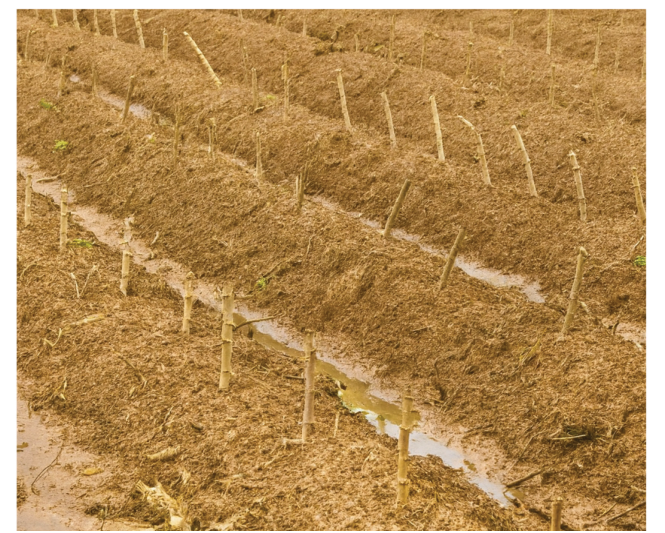
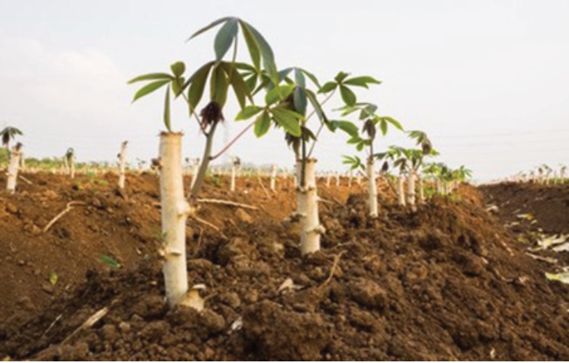

Figure 3.3 (a): Planted cassava cuttings

Figure 3.3 (b): A sprouting cassava cutting
Sources: https://www.shutterstock.com/image-photo/cassava-tapioca-plants-manioc-germinate-
branch-1033869577


Agriculture for Secondary Schools

Figure 3.3 (a): Planted cassava cuttings

Figure 3.3 (b): A sprouting cassava cutting
Sources: https://www.shutterstock.com/image-photo/cassava-tapioca-plants-manioc-germinate-
branch-1033869577
45
Student’s Book Form Two